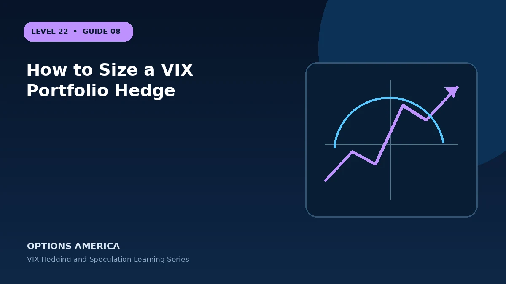

Translate a target equity loss into scenario-based contract quantities and a premium budget.
Understand the economic exposure
Hedge ratios are conditional estimates because the relationship between equities, VIX futures and options changes across shocks. Calculate the complete economic position with signed quantities, contract multipliers and every opening cash flow. Stock, options and futures must be viewed together. Before expiration, changing time value and volatility can produce a result that looks very different from the final payoff line.
Measure more than one outcome
One forecast is not enough for vix strategies. Model a calm path, the expected path, an early adverse move and a tail event. Repeat the exercise with less time remaining. This exposes positions that appear comfortable at expiration but require too much capital or patience before then.
Check the changing Greeks
A single net Greek can hide important structure. Two legs may offset vega while referencing different expirations, or offset delta while carrying negative gamma. Map the signed sensitivities of how to size a vix portfolio hedge by leg, then aggregate them with the rest of the account.
Plan execution and liquidity
Liquidity changes the realized version of vix strategies. Compare displayed markets across strikes and maturities, avoid assuming midpoint fills, and plan how a partial fill would be handled. Product specifications also matter: cash settlement, exercise style and assignment can change both timing and capital needs.
Define management before entry
Set the management rules for how to size a vix portfolio hedge while the decision is still calm: profit objective, loss limit, review trigger and latest exit date. A roll closes the existing contract and opens another, so keep all prior cash flows in the record. The new position must be justified on its own forward-looking merits.
Start with the objective
Every sound vix strategies plan starts with a precise reason for taking risk. For how to size a vix portfolio hedge, write the exposure being added or reduced, how long it is needed and how much the result may cost. Translate a target equity loss into scenario-based contract quantities and a premium budget. If those items cannot be measured, position quality cannot be evaluated afterward.
A practical example
If a $500,000 portfolio stress test loses $50,000 and each call spread gains $2,500, twenty spreads provide a modeled full offset.
This simplified example is educational and focuses on selected outcomes. Live prices also reflect time, implied volatility, skew, rates, dividends where applicable, liquidity, settlement conventions and transaction costs. Greeks and scenario values are estimates, not guarantees.
Decision checklist
Confirm the market thesis and time horizon. Calculate the full-position payoff and premium at risk. Stress price, volatility and time together. Check contract specifications and settlement. Set the maximum account-level loss, reserve capital and exit trigger. Finally, record the result after closing so the next decision is based on evidence rather than memory.
Frequently asked questions
What is the key idea behind How to Size a VIX Portfolio Hedge?
Hedge ratios are conditional estimates because the relationship between equities, VIX futures and options changes across shocks.
Does the example guarantee a live-market result?
No. It is an educational scenario; live prices, volatility, liquidity, costs and contract terms can change the outcome.
What should be defined before entry?
The objective, size, maximum tolerated loss, review triggers, settlement or assignment plan and exit date.
Continue the VIX Hedging and Speculation cluster
Explore related guides: VIX Hedge Cost, Carry and Roll Yield · VIX Hedging and Speculation: 12 Mistakes to Avoid · VIX Put Strategies for Falling Volatility. For a structured sequence, use the free Level 22 – VIX Hedging and Speculation course.
Options and volatility products involve risk and are not suitable for every investor. This material is educational and is not investment, tax or legal advice. Verify current contract specifications with the exchange and your broker.